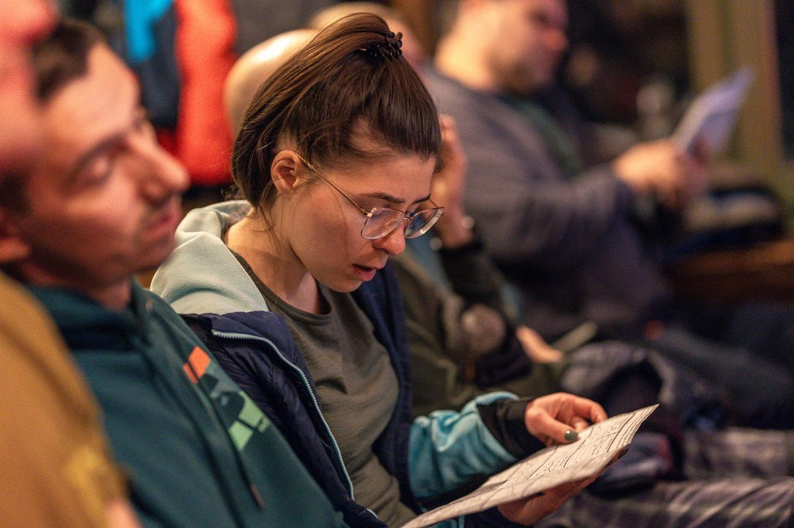
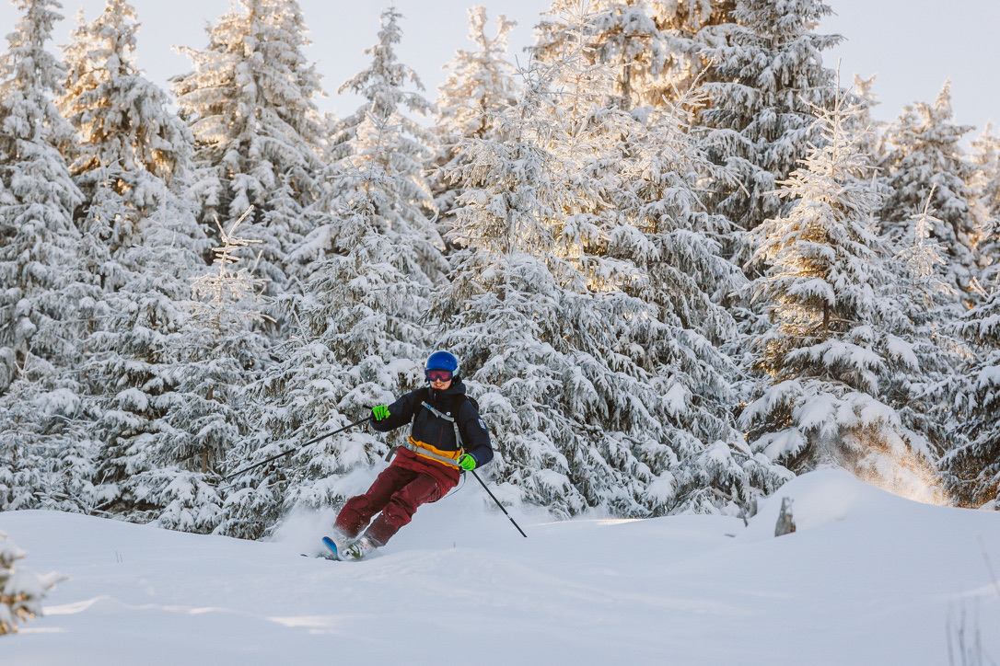
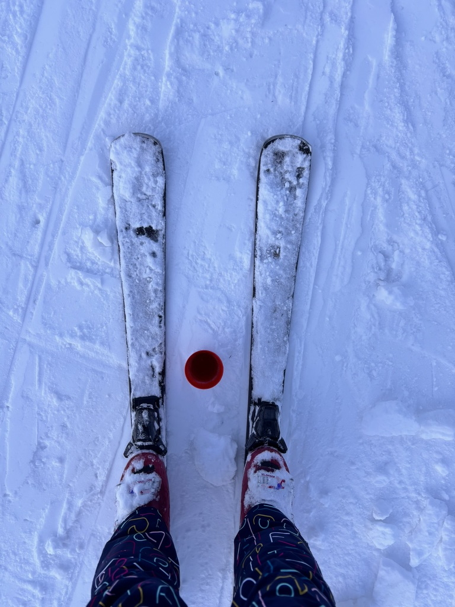
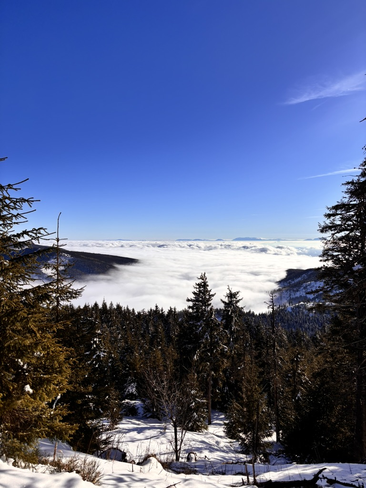
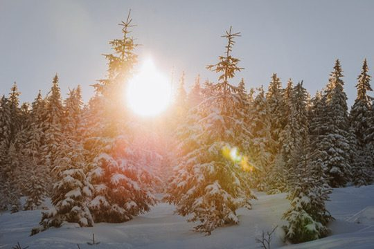
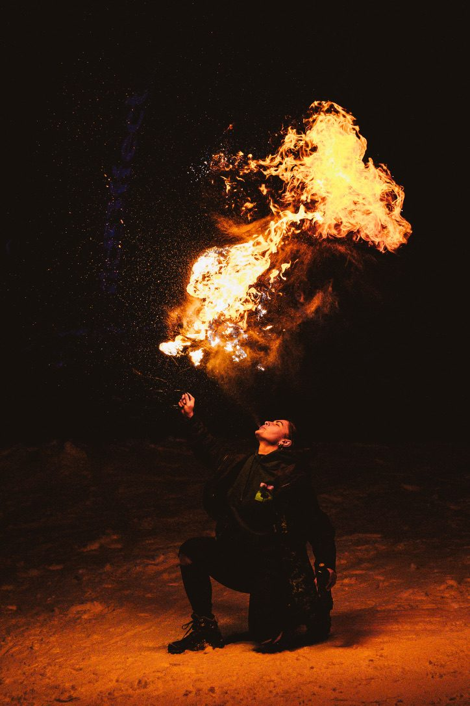
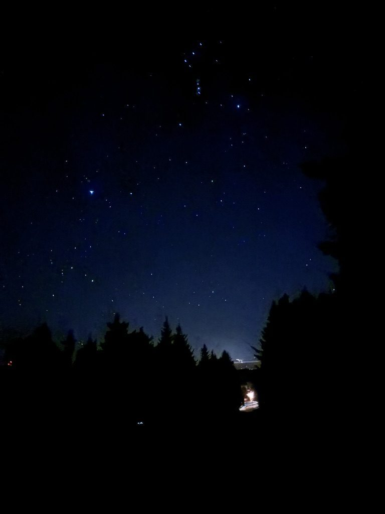
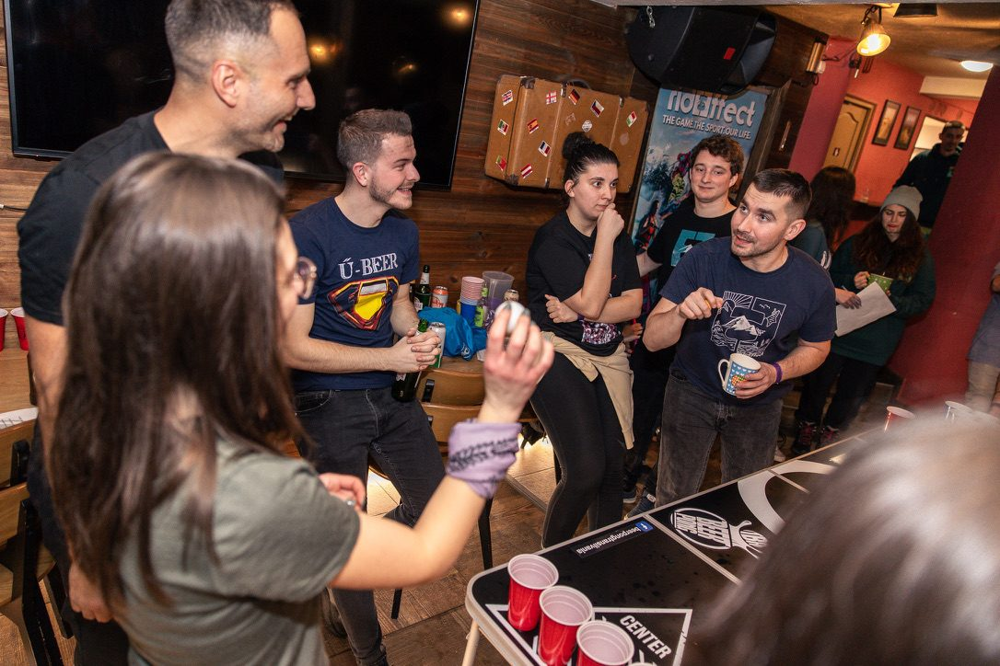

The mountain at first light. From above it looks very manageable.
There is a specific category of humbling that comes from being in a group of people who are very good at something you are still figuring out. Skiing, for me, was that thing. I went to a ski camp in Romania — organised, with sessions, with coaches, with a proper programme. I arrived knowing I could ski. I arrived not knowing how much I didn't know.
The briefing

The briefing. Some people more excited than others! 😆
A ski camp has sessions. Mornings on the mountain, afternoons with coaches working on specific technique, evenings with varying degrees of chaos. The briefing on the first day was thorough. I read the programme like it contained information that would make the slopes less steep. It did not.
Other people in this camp

Someone else at this camp. Not me.
Some people in this camp were doing things between trees that required a camera with a very fast shutter speed to capture. I watched them from what felt like a different species of activity. They were skiing. I was also technically skiing. The Venn diagram of what we were doing had limited overlap.

My perspective. A red piste marker between my skis. Progress is non-linear.
I took this photo because it felt like an accurate document of where I was. Looking down. Making sure both skis were still there. The red marker between them indicating I had at least arrived at the correct part of the run.
This is the version of skiing that doesn't appear in the camp promotional material. The part where you're standing on a slope looking at your own feet, recalibrating, having a private conversation with gravity.
The group at golden hour

The group at the end of the day. Nobody looks like they've been negotiating with gravity for six hours.
By the end of each day, the group would gather on the ridge for the golden hour — that specific late-afternoon light that makes Romanian mountain resorts look like somewhere else entirely. Everyone relaxed. Everyone slightly exhausted. The skill gap that was visible on the slope dissolved in the evening light, which is one of the better properties of ski camps in general: the day always ends together, and the shared tiredness levels everything out.
Above the clouds

The cloud inversion. The whole valley was under that. We were above it.

The forest at midday. This light made the effort feel worthwhile.
On one morning the valley was completely below the clouds and the mountain was in full sun. It's called a cloud inversion and it looks wrong — like the sky and the ground have been swapped. The forest around the runs was lit the way it only gets in deep winter, and the view from the ridgeline out over the white sea below was the kind of thing that makes you stop skiing and just look for a while.
The fire shows at night

The fire breather at the base of the slope. Some evenings the mountain has surprises.

Out into the dark afterwards — a few of us hiked up to chase the stars. The evening programme takes the mountain seriously.
The evenings had fire. A fire breather at the base of the slope, sparks landing on the snow — the kind of evening entertainment that you genuinely don't expect at a ski camp and that makes perfect sense once you're watching it. Fire on snow, the two elements sharing the mountain for a few minutes. And later, for anyone with energy left, the dark and the stars.
Après ski

The après ski. The mountain is done with you for the day. You are not done with the mountain.
Après ski is not about skiing. It is about the stories you tell about skiing. By the evening, the wobbles on the slope become funny rather than humbling, the falls become better in the retelling, and the gap between the person jumping between trees and the person looking at their ski tips closes to nothing because everyone is sitting in the same room talking about the same mountain.
This is what ski camps are actually for. Not technique, though technique improves. The thing they're actually for is this: a group of people choosing the same discomfort, in the same place, for the same number of days. What comes out of that is something that the brochure doesn't mention because it can't be guaranteed. You either get it or you don't.
We got it.
New to skiing? Get covered before you go.
Considering travel insurance for your trip? World Nomads offers coverage for more than 150 adventure activities — including skiing — as well as emergency medical, lost luggage, trip cancellation and more.
Get a Quote from World NomadsThis is an affiliate link — if you book through it, I may earn a small commission at no extra cost to you.